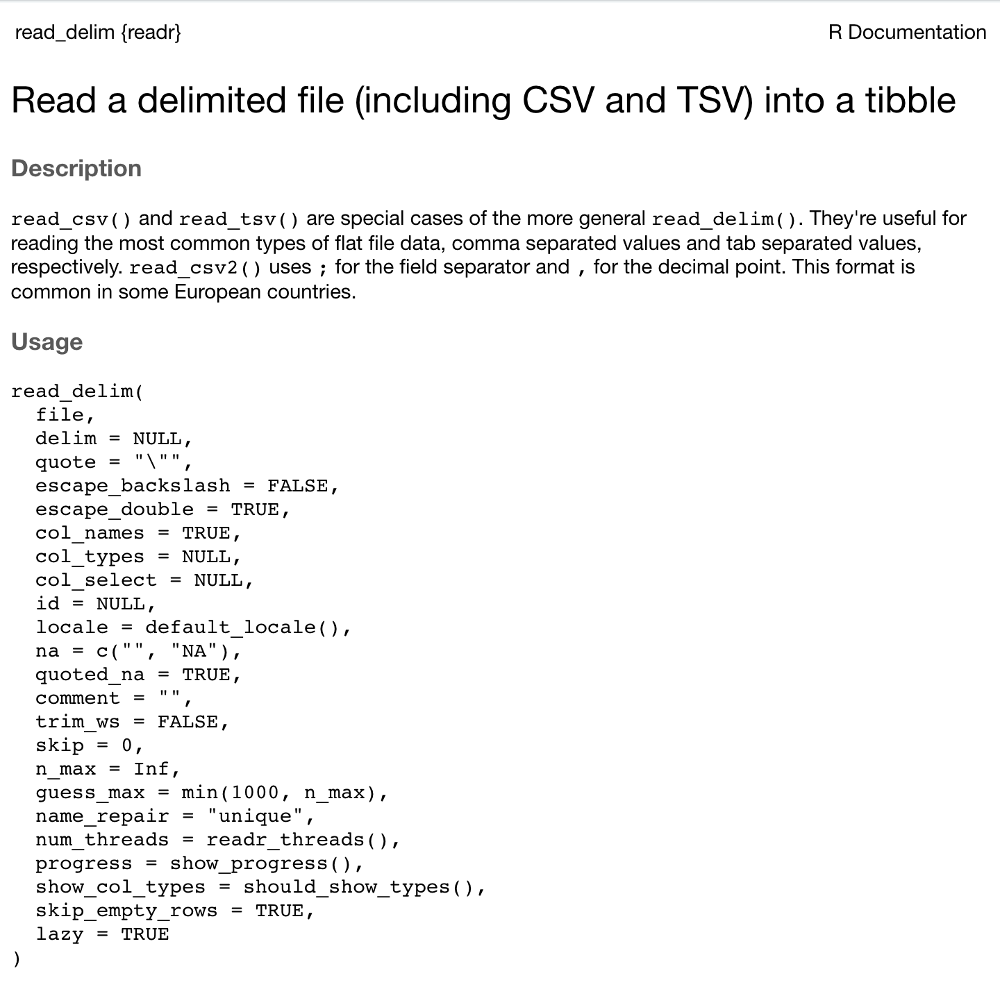
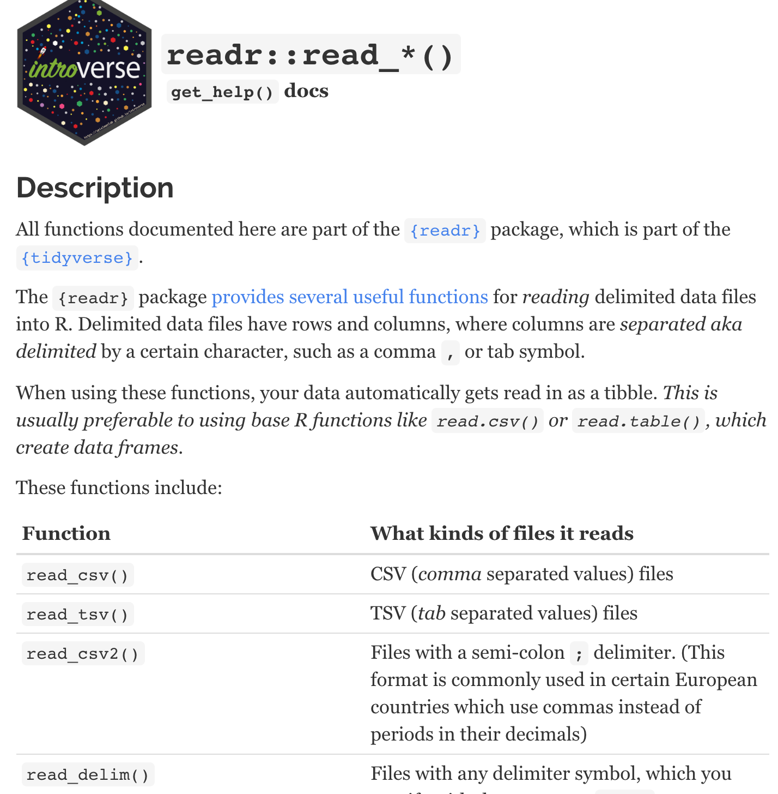

Chapter 2 Handling Data with the Tidyverse
A key component of doing statistics in the modern world is managing/wrangling or cleaning data to make it ready for analysis. Indeed, some estimate that those who do data science spend 80% of their time engaged in cleaning data. Although this specific percentage may not be accurate it does accurately reflect the fact that data scientists do spend a substantial portion of their time preparing data for analysis. Many complain about this fact but as Leigh Dodds points out “I would argue that spending time working with data. To transform, explore and understand it better is absolutely what data scientists should be doing. This is the medium they are working in.”
In this chapter we focus on teaching you foundational skills for data preparation. The skills taught in this chapter largely revolve around using the tidyverse packages to manage data that will eventually help with data cleaning in the Workflow and Qualtrics chapters. There are some additional resources you may want to consult as you learn these tidyverse skills:
R for Data Science book. This is an excellent free online book! But it does reflect an exploratory analysis mindset compared to the confirmatory mindset we typically use in Psychological science.
You may find a cheatsheet helpful. Specifically, the Data Transformation cheatsheet.
2.1 Required
The data files below are used in this chapter. Right click to save each file.
| Required Data |
|---|
| data_okcupid.csv |
| data_experiment.csv |
The following CRAN packages must be installed:
| Required CRAN Packages |
|---|
| tidyverse |
| remotes |
The following GitHub package must be installed:
| Required GitHub Packages |
|---|
| spielmanlab/introverse |
After the remotes package is installed, it can be used to install the introverse package from GitHub (an alternative “App Store”). If you get asked if you would like to install more recent versions of packages on your machine press “1” and Return to indicate “All” (if you are asked, you may not be).
remotes::install_github("spielmanlab/introverse")2.2 Objective
The objective of this chapter is to familiarize you with some key commands in the tidyverse. These commands are used in isolation of each other for the most part. In the next chapter we will use these commands in a more coordinated way as we load a data set and move it from raw data to data that is ready for analysis (i.e., analytic data). You can start this project by Starting the class assignment on R Studio Cloud that corresponds to the chapter name.
2.3 Using the Console
All of the commands in this chapter should be typed into the Console within R. If you see a command split over multiple lines, use SHIFT-RETURN (macOS) or SHIFT-ENTER (Windows) to move the next line that is part of the same command.
2.4 Tidyverse help with the Introverse
The introverse package is just additional documentation that is helpful for beginners - until you learn to read the standard R documentation. The first command we will use in this chapter is the read_csv() command. You get the standard R help for this command using the code below in the R Console:
library(tidyverse) # this actives the tidyverse commands
?read_csvThis gives you help that looks like this:

But you can obtain the better introverse documentation by typing the code below in the R Console:
library(introverse) # this actives the intoverse help
get_help("read_csv")This gives you help that looks like this:

Most importantly, when you scroll down on the introverse help pages - it gives you code examples that are easy to follow. If at any point during this course you want more information about how a command works use the introverse get_help() command.
The get_help() command is especially valuable because it tells you which package (of the many tidyverse packages) a particular command comes from. For example, you can see the read_csv() command is from the readr package when you inspect the introverse help above.
2.5 Basic tidyverse commands
If you inspect the Files tab on the lower-right panel in R Studio you will see the file data_okcupid.csv. The code below loads that file. Recall you should type this code into the R Console.
library(tidyverse)
okcupid_profiles <- read_csv("data_okcupid.csv")You can see the first few rows of the data using the print() command. Each row presents a person whereas each column represents a variable. If you have a large number of columns you will only see the first several columns with this approach to viewing your data.
print(okcupid_profiles)## # A tibble: 59,946 × 6
## age diet height pets sex status
## <dbl> <chr> <dbl> <chr> <chr> <chr>
## 1 22 strictly anything 75 likes dogs a… m single
## 2 35 mostly other 70 likes dogs a… m single
## 3 38 anything 68 has cats m avail…
## 4 23 vegetarian 71 likes cats m single
## 5 29 <NA> 66 likes dogs a… m single
## 6 29 mostly anything 67 likes cats m single
## 7 32 strictly anything 65 likes dogs a… f single
## 8 31 mostly anything 65 likes dogs a… f single
## 9 24 strictly anything 67 likes dogs a… f single
## 10 37 mostly anything 65 likes dogs a… m single
## # … with 59,936 more rowsBut it’s also helpful just to see a list of the columns in the data with the glimpse() command:
glimpse(okcupid_profiles)## Rows: 59,946
## Columns: 6
## $ age <dbl> 22, 35, 38, 23, 29, 29, 32, 31, 24, 37, 35,…
## $ diet <chr> "strictly anything", "mostly other", "anyth…
## $ height <dbl> 75, 70, 68, 71, 66, 67, 65, 65, 67, 65, 70,…
## $ pets <chr> "likes dogs and likes cats", "likes dogs an…
## $ sex <chr> "m", "m", "m", "m", "m", "m", "f", "f", "f"…
## $ status <chr> "single", "single", "available", "single", …The glimpse() command is useful because it quickly allows you to see all of the columns. Moreover, it allows you to see the type for each column. Types were briefly discussed in the last chapter. Notice in the output beside each column name that some columns are labeled “dbl” which is short for double – a type of numeric column. Other columns are labeled “chr” which is short for character - meaning the columns contain characters. These designations will become important in the next chapter as we prepare data for analysis.
2.5.1 select()
The select() command allows you to obtain a subset of the columns in your data. The commands below can be used to obtain the age and height columns. You can read the command as: take the okcupid_profiles data and then select the age and height columns. The “%>%” symbol can be read as “and then”. You can see that this code prints out the data with just the age and height columns. Remember, use SHIFT-ENTER or SHIFT-RETURN to move to the next line in the block of code.
okcupid_profiles %>%
select(age, height)## # A tibble: 59,946 × 2
## age height
## <dbl> <dbl>
## 1 22 75
## 2 35 70
## 3 38 68
## 4 23 71
## 5 29 66
## 6 29 67
## 7 32 65
## 8 31 65
## 9 24 67
## 10 37 65
## # … with 59,936 more rowsOf course, it’s usually of little help to just print the subset of the data. It’s better to store it in a new data. In the command below we store the resulting data in a new data set called new_data.
new_data <- okcupid_profiles %>%
select(age, height)The glimpse() command shows us that only the age and height columns are in new_data.
glimpse(new_data)## Rows: 59,946
## Columns: 2
## $ age <dbl> 22, 35, 38, 23, 29, 29, 32, 31, 24, 37, 35,…
## $ height <dbl> 75, 70, 68, 71, 66, 67, 65, 65, 67, 65, 70,…In the above example we indicated the columns we wanted to retain from the okcupid_profiles data using the select() command. However, we can also indicate the columns we want to drop from okcupid_profiles using a minus sign (-) in front of the columns we specify in the select() command.
new_data <- okcupid_profiles %>% select(-age, -height)The glimpse() command shows us that we kept all the columns except the age and height columns when we created new_data.
glimpse(new_data)## Rows: 59,946
## Columns: 4
## $ diet <chr> "strictly anything", "mostly other", "anyth…
## $ pets <chr> "likes dogs and likes cats", "likes dogs an…
## $ sex <chr> "m", "m", "m", "m", "m", "m", "f", "f", "f"…
## $ status <chr> "single", "single", "available", "single", …2.5.2 summarise()
The summarise() command can be used to generate descriptive statistics for a specified column. You can easily calculate column descriptive statistics using the corresponding commands for mean(), sd(), min(), max(), among others. In the example below we calculate the mean for the age column.
In the code below, mean(age, na.rm = TRUE), indicates to R that it should calculate the mean of the age column. The na.rm indicates how missing values should be handled. The na stands for not available; in R missing values are classified as Not Available or NA. The rm stands for remove. Consequently, na.rm is asking: “Should we remove missing values when calculating the mean?” The TRUE indicates that yes, missing values should be removed when calculating the mean. The result of this calculation is placed into a variable labelled age_mean, though we could have used any label we wanted instead of age_mean. We see that the mean of the age column is, with rounding, 32.3.
okcupid_profiles %>%
summarise(age_mean = mean(age, na.rm = TRUE))## # A tibble: 1 × 1
## age_mean
## <dbl>
## 1 32.3More than one calculation can occur in the same summarise() command. You can easily add the calculation for the standared deviation with the sd() command.
okcupid_profiles %>%
summarise(age_mean = mean(age, na.rm = TRUE),
age_sd = sd(age, na.rm = TRUE))## # A tibble: 1 × 2
## age_mean age_sd
## <dbl> <dbl>
## 1 32.3 9.45Often this process does too much rounding. We can get more exact results by adding an as.data.frame() to the end of the commands.
okcupid_profiles %>%
summarise(age_mean = mean(age, na.rm = TRUE),
age_sd = sd(age, na.rm = TRUE)) %>%
as.data.frame()## age_mean age_sd
## 1 32.34 9.4532.5.3 filter()
The filter() command allows you to obtain a subset of the rows in your data. In the example below we create a new data set with just the males from the original data.
Notice the structure of the original data below in the glimpse() output. There is a column called sex that uses m and f to indicate male and female, respectively. Also notice that there are 59946 rows in the okcupid_profiles data.
glimpse(okcupid_profiles)## Rows: 59,946
## Columns: 6
## $ age <dbl> 22, 35, 38, 23, 29, 29, 32, 31, 24, 37, 35,…
## $ diet <chr> "strictly anything", "mostly other", "anyth…
## $ height <dbl> 75, 70, 68, 71, 66, 67, 65, 65, 67, 65, 70,…
## $ pets <chr> "likes dogs and likes cats", "likes dogs an…
## $ sex <chr> "m", "m", "m", "m", "m", "m", "f", "f", "f"…
## $ status <chr> "single", "single", "available", "single", …We use the filter command to select a subset of the rows based on the content of any column. In this case the sex column is used to obtain a subset of the rows; the rows with the value “m” are obtained. Notice the double equals sign is used to indicate “equal to”. The reason a double equals sign is used here (instead of a single equals sign) is to distinguish it from the use of the single equals sign in the summarise command above. In the summarise command above, the single equal sign was used to indicate “assign to”. That is, assign to age_mean the mean of the column age after it is calculated. A single equals sign indicates “assign to” whereas a double equals sign indicates “is equal to”.
okcupid_males <- okcupid_profiles %>%
filter(sex == "m")We use glimpse() to inspect these all male data. Notice that only the letter m is in the sex column - indicating only males are in the data set. Also notice that there are 35829 rows in the okcupid_males data - fewer people because males are a subset of the total number of rows.
glimpse(okcupid_males)## Rows: 35,829
## Columns: 6
## $ age <dbl> 22, 35, 38, 23, 29, 29, 37, 35, 28, 24, 33,…
## $ diet <chr> "strictly anything", "mostly other", "anyth…
## $ height <dbl> 75, 70, 68, 71, 66, 67, 65, 70, 72, 72, 70,…
## $ pets <chr> "likes dogs and likes cats", "likes dogs an…
## $ sex <chr> "m", "m", "m", "m", "m", "m", "m", "m", "m"…
## $ status <chr> "single", "single", "available", "single", …The filter command can be combined with the summarise command to get the descriptive statistics for males without the hassle of creating new data. This is again done using the %>% “and then” operator.
okcupid_profiles %>%
filter(sex == "m") %>%
summarise(age_mean = mean(age, na.rm = TRUE),
age_sd = sd(age, na.rm = TRUE))## # A tibble: 1 × 2
## age_mean age_sd
## <dbl> <dbl>
## 1 32.0 9.03We see that for the 35829 males the mean age is 32.0 and the standard deviation is 9.0.
Likewise, we can obtain the descriptive statistics for females with only a slight modification, changing m to f in the filter command:
okcupid_profiles %>%
filter(sex == "f") %>%
summarise(age_mean = mean(age, na.rm = TRUE),
age_sd = sd(age, na.rm = TRUE))## # A tibble: 1 × 2
## age_mean age_sd
## <dbl> <dbl>
## 1 32.8 10.0We see that for the 24117 females the mean age is 32.8 and the standard deviation is 10.0.
2.5.4 group_by()
The process we used with the filter command would quickly become onerous if we had many subgroups for a column. Consequently, it’s often better to use the group() command to calculate descriptive statistics for the levels (e.g., male/female) of a variable. By telling the computer to group_by() sex the summarise command is run separately for every level of sex (i.e., m and f).
okcupid_profiles %>%
group_by(sex) %>%
summarise(age_mean = mean(age, na.rm = TRUE),
age_sd = sd(age, na.rm = TRUE)) ## # A tibble: 2 × 3
## sex age_mean age_sd
## <chr> <dbl> <dbl>
## 1 f 32.8 10.0
## 2 m 32.0 9.03Fortunately, it’s possible to use more than one grouping variable with the group_by() command. In the code below we group by sex and status (i.e., dating status).
okcupid_profiles %>%
group_by(sex, status) %>%
summarise(age_mean = mean(age, na.rm = TRUE),
age_sd = sd(age, na.rm = TRUE)) ## `summarise()` has grouped output by 'sex'. You can override
## using the `.groups` argument.## # A tibble: 10 × 4
## # Groups: sex [2]
## sex status age_mean age_sd
## <chr> <chr> <dbl> <dbl>
## 1 f available 32.2 8.54
## 2 f married 33.7 8.13
## 3 f seeing someone 28.1 6.44
## 4 f single 33.0 10.2
## 5 f unknown 27.8 5.91
## 6 m available 34.8 9.40
## 7 m married 38.7 10.1
## 8 m seeing someone 30.8 7.06
## 9 m single 31.9 9.04
## 10 m unknown 40.7 8.87The resulting output provide for age the mean and standard deviation for every combination of sex and dating status. The first five rows provide output for females at every level of dating status whereas the subsequent five rows provide output for males at every level of dating status.
2.5.5 mutate()
The mutate() command can be used to calculate a new column in a data. In the example below we calculate a new column called age_centered which is the new version of the age_column where the mean of the column has been removed from every value. This is merely an example of the many different types of calculations we can perform to create a new column using mutate().
okcupid_profiles <- okcupid_profiles %>%
mutate(age_centered = age - mean(age, na.rm = TRUE))Notice that the glimpse() command reveals that after we use the mutate() command there is a new column called age_centered.
glimpse(okcupid_profiles)## Rows: 59,946
## Columns: 7
## $ age <dbl> 22, 35, 38, 23, 29, 29, 32, 31, 24, 3…
## $ diet <chr> "strictly anything", "mostly other", …
## $ height <dbl> 75, 70, 68, 71, 66, 67, 65, 65, 67, 6…
## $ pets <chr> "likes dogs and likes cats", "likes d…
## $ sex <chr> "m", "m", "m", "m", "m", "m", "f", "f…
## $ status <chr> "single", "single", "available", "sin…
## $ age_centered <dbl> -10.3403, 2.6597, 5.6597, -9.3403, -3…2.6 Advanced tidyverse commands
In this advanced selection we revisit the commands from the basic tidyverse section but use more complicated code to either select or apply an action to more than one column at a time. We will indicate the columns that we want to select or apply an action to using: starts_with(), ends_with(), contains(), matches(), or where(). The first four of these are used to indicate columns based on column names. In contrast, the last command, where(), is used to indicate the columns based on the column type (numeric, character, factor, etc.).
We will review all five commands for indicating the columns we want in the select() selection below. Following that we will, for brevity, typically use only one of the five commands when illustrating how they work with summarise() and mutate().
We begin by loading a new data.
library(tidyverse)
data_exp <- read_csv("data_experiment.csv")## Rows: 6 Columns: 6
## ── Column specification ────────────────────────────────────
## Delimiter: ","
## chr (1): sex
## dbl (5): id, t1_vomit, t1_aggression, t2_vomit, t2_aggre...
##
## ℹ Use `spec()` to retrieve the full column specification for this data.
## ℹ Specify the column types or set `show_col_types = FALSE` to quiet this message.The glimpse() command reveals that this is a small data set where every row represents one rat. The sex of the rat is recorded as well as, for each of two time points, a rating of vomiting and aggression.
glimpse(data_exp)## Rows: 6
## Columns: 6
## $ id <dbl> 1, 2, 3, 4, 5, 6
## $ sex <chr> "male", "female", "male", "female", …
## $ t1_vomit <dbl> 3, 2, 0, 3, 2, 1
## $ t1_aggression <dbl> 5, 6, 4, 7, 3, 8
## $ t2_vomit <dbl> 2, 1, 1, 2, 1, 2
## $ t2_aggression <dbl> 6, 7, 6, 7, 5, 82.6.1 select()
2.6.1.1 select() using column name
2.6.1.1.1 starts_with()
starts_with() allows us to select columns based on how the column name begins. Here we put the columns that begin with “t1” into a new data called data_time1.
data_time1 <- data_exp %>%
select(starts_with("t1"))The glimpse command shows us the new data only contains the columns that begin with “t1”
glimpse(data_time1)## Rows: 6
## Columns: 2
## $ t1_vomit <dbl> 3, 2, 0, 3, 2, 1
## $ t1_aggression <dbl> 5, 6, 4, 7, 3, 82.6.1.1.2 ends_with()
ends_with() allows us to select columns based on how the column name ends. Here we put the columns that end with “aggression” into a new data set called data_aggression.
data_aggression <- data_exp %>%
select(ends_with("aggression"))glimpse(data_aggression)## Rows: 6
## Columns: 2
## $ t1_aggression <dbl> 5, 6, 4, 7, 3, 8
## $ t2_aggression <dbl> 6, 7, 6, 7, 5, 82.6.1.1.3 contains()
contains() allows us to select columns based on the contents of the column name. Here we put the columns that have “_” in the name into a new data set called new_data.
new_data <- data_exp %>%
select(contains("_"))glimpse(new_data)## Rows: 6
## Columns: 4
## $ t1_vomit <dbl> 3, 2, 0, 3, 2, 1
## $ t1_aggression <dbl> 5, 6, 4, 7, 3, 8
## $ t2_vomit <dbl> 2, 1, 1, 2, 1, 2
## $ t2_aggression <dbl> 6, 7, 6, 7, 5, 82.6.1.1.4 matches()
It’s also possible to use regex (i.e., a regular expression) to select columns. Regex is a powerful way to specify search/matching requirements for text - in this case the text of column names. An explanation of regex is beyond the scope of this chapter. Nonetheless the example below uses regex to select any column with an underscore in the column name followed by any character. The result is the same as the above for the contains() command. However, the matches() command is more flexible than the contains() command and can take into account substantially more complicated situations.
data_matched <- data_exp %>%
select(matches("(_.)"))You can see the columns selected using regex:
glimpse(data_matched)## Rows: 6
## Columns: 4
## $ t1_vomit <dbl> 3, 2, 0, 3, 2, 1
## $ t1_aggression <dbl> 5, 6, 4, 7, 3, 8
## $ t2_vomit <dbl> 2, 1, 1, 2, 1, 2
## $ t2_aggression <dbl> 6, 7, 6, 7, 5, 8You can learn about regex at RegexOne and test your regex specification at Regex101. Ideally though, as we discuss in the next chapter, you can use naming conventions that are sufficiently thoughtful that you don’t need regex, or only rarely. The reason for this is that regex can be challenging to use. As Twitter user @ThatJenPerson noted “Regex is like tequila: use it to try to solve a problem and now you have two problems.” Nonetheless, at one or two points in the future we will use regex to solve a problem (but not tequila).
2.6.1.2 select() using column type
In many cases we will want to select or perform an action on a column based on whether the column is a numeric, character, or factor column (indicated in glimpse output as dbl, chr, and fct, respectively). We will learn more about factors later in this chapter. Each of these column types can be selected by using is.numeric, is.character, or is.factor, respectively, in combination with the where() command.
We can select numeric columns using where() and is.numeric:
data_numeric_columns <- data_exp %>%
select(where(is.numeric))You can see the new data contains only the numeric columns:
glimpse(data_numeric_columns)## Rows: 6
## Columns: 5
## $ id <dbl> 1, 2, 3, 4, 5, 6
## $ t1_vomit <dbl> 3, 2, 0, 3, 2, 1
## $ t1_aggression <dbl> 5, 6, 4, 7, 3, 8
## $ t2_vomit <dbl> 2, 1, 1, 2, 1, 2
## $ t2_aggression <dbl> 6, 7, 6, 7, 5, 8We can select character (i.e., chr) columns using where() and is.character:
data_character_columns <- data_exp %>%
select(where(is.character))You can see the new data contains only the character columns:
glimpse(data_character_columns)## Rows: 6
## Columns: 1
## $ sex <chr> "male", "female", "male", "female", "male", "f…In a future chapter you will see how we can select factors using where(is.factor).
2.6.2 summarise()
The summarise() command can summarise multiple columns when combined with starts_with(), ends_with(), contains(), matches(), and where(). However, to use these powerful tools for indicating columns with the summarise command we need the help of the across() command (i.e., across multiple columns).
If we want to obtain the mean of all the columns that start with “t1” we use the commands below. The across command requires that we indicate the columns we want via the .cols argument and the command/function we want to run on those columns via the .fns argument. In the example below, we also add na.rm = TRUE at the end; this is something we send to the mean command to let it know how we want to handle missing data. We add as.data.frame() to get a larger number of decimals.
data_exp %>%
summarise(across(.cols = starts_with("t1"),
.fns = mean,
na.rm = TRUE)) %>%
as.data.frame()## t1_vomit t1_aggression
## 1 1.833 5.5If you want to get more sophisticated, you can also add this .names argument below which tells R to call label each output mean by the column name followed by “_mean”.
data_exp %>%
summarise(across(.cols = starts_with("t1"),
.fns = mean,
na.rm = TRUE,
.names = "{col}_mean")) %>%
as.data.frame()## t1_vomit_mean t1_aggression_mean
## 1 1.833 5.5Often you want to calculate more than one statistic for each column. For example, you might want the mean, standard deviation, min, and max. These statistics can be calculated via the mean, sd, min, and max commands, respectively. However, you need to create a list with the statistics you desire.
Below we create a list of the descriptive statistics we desire called desired_statistics, but you can use any name you want. This list only needs to be specified once, but we will repeat it in the examples below for clarity.
desired_descriptives <- list(
mean = ~mean(.x, na.rm = TRUE),
sd = ~sd(.x, na.rm = TRUE)
)Once you have created the list of descriptive statistics you want you can run the command below to obtain those statistics. However, as you will see the output is too wide to be helpful.
data_exp %>%
summarise(across(.cols = starts_with("t1"),
.fns = desired_descriptives)) %>%
as.data.frame()## t1_vomit_mean t1_vomit_sd t1_aggression_mean
## 1 1.833 1.169 5.5
## t1_aggression_sd
## 1 1.871Consequently, we add the t() command (i.e., transpose command) to the end of the summarise request to get a more readable list of statistics:
desired_descriptives <- list(
mean = ~mean(.x, na.rm = TRUE),
sd = ~sd(.x, na.rm = TRUE)
)
data_exp %>%
summarise(across(.cols = starts_with("t1"),
.fns = desired_descriptives)) %>%
as.data.frame() %>%
t() ## [,1]
## t1_vomit_mean 1.833
## t1_vomit_sd 1.169
## t1_aggression_mean 5.500
## t1_aggression_sd 1.871Note that in the across command above we could also have used: ends_with(), contains(), matches(), or where().
2.6.3 mutate()
The mutate() command can also be applied to multiple columns using the across() command. However, sometimes we need to embed our calculation in a custom function. Below is a custom function called make_centered. This custom function takes the values in a column and subtracts the column mean from each value in the column. This is the same task we did previous using the mutate() command in the basic tidyverse section.
make_centered <- function(values) {
values_out <- values - mean(values, na.rm = TRUE)
return(values_out)
}The glimpse() command shows us all the column names. Also notice the values in the agresssion columns are integers.
glimpse(data_exp)## Rows: 6
## Columns: 6
## $ id <dbl> 1, 2, 3, 4, 5, 6
## $ sex <chr> "male", "female", "male", "female", …
## $ t1_vomit <dbl> 3, 2, 0, 3, 2, 1
## $ t1_aggression <dbl> 5, 6, 4, 7, 3, 8
## $ t2_vomit <dbl> 2, 1, 1, 2, 1, 2
## $ t2_aggression <dbl> 6, 7, 6, 7, 5, 8We combine the mutate() command, with the across() command, and our custom make_centered() command below. The command “centers” or subtracts the mean from any column that ends with “aggression”.
data_exp <- data_exp %>%
mutate(across(.cols = ends_with("aggression"),
.fns = make_centered))You can see via the glimpse() output that the contents of all the columns that end with “aggression” have changed. Every value in each of these columns has had the column mean subtracted from it.
glimpse(data_exp)## Rows: 6
## Columns: 6
## $ id <dbl> 1, 2, 3, 4, 5, 6
## $ sex <chr> "male", "female", "male", "female", …
## $ t1_vomit <dbl> 3, 2, 0, 3, 2, 1
## $ t1_aggression <dbl> -0.5, 0.5, -1.5, 1.5, -2.5, 2.5
## $ t2_vomit <dbl> 2, 1, 1, 2, 1, 2
## $ t2_aggression <dbl> -0.5, 0.5, -0.5, 0.5, -1.5, 1.5Note that in the across() command above, we could also have used: starts_with(), contains(), matches(), or where().
2.6.3.1 mutate() within rows
Researchers often want to average within rows and across columns to create a new column. That is, for each participant (i.e., rat in the current data) we might want to calculate a vomit score that is the average of the two time points (that we will call vomit_avg).
To average within rows (and across columns) we use the rowwise() command to inform R of our intent. However, after we do the necessary calculations we have to shut off the rowwise() calculation state by using the ungroup() command. As well, when we are averaging within rows we have to use c_across() instead of across(). The commands below create a new column called vomit_avg which is the average of the vomit ratings across both times. As before, we also include na.rm = TRUE so the computer drops missing values (if present) when calculating the mean.
data_exp <- data_exp %>%
rowwise() %>%
mutate(vomit_avg = mean( c_across(cols = ends_with("vomit")),
na.rm = TRUE)) %>%
ungroup()You can see the new column we created with the glimpse() command:
glimpse(data_exp)## Rows: 6
## Columns: 7
## $ id <dbl> 1, 2, 3, 4, 5, 6
## $ sex <chr> "male", "female", "male", "female", …
## $ t1_vomit <dbl> 3, 2, 0, 3, 2, 1
## $ t1_aggression <dbl> -0.5, 0.5, -1.5, 1.5, -2.5, 2.5
## $ t2_vomit <dbl> 2, 1, 1, 2, 1, 2
## $ t2_aggression <dbl> -0.5, 0.5, -0.5, 0.5, -1.5, 1.5
## $ vomit_avg <dbl> 2.5, 1.5, 0.5, 2.5, 1.5, 1.5The print() command could make it easier to see that the new column is the average of the other two, but if we use the print() command below it wouldn’t work. Why? There are too many columns in the data set, so only the first few columns are shown.
print(data_exp)To see that the new column, vomit_avg, is the average of the other vomit columns we use the select command before print(). This prints only the relvant columns. When this is done, it’s easy to see how the values in the vomit_avg column are the mean of the other two columns.
data_exp %>%
select(contains("vomit")) %>%
print()## # A tibble: 6 × 3
## t1_vomit t2_vomit vomit_avg
## <dbl> <dbl> <dbl>
## 1 3 2 2.5
## 2 2 1 1.5
## 3 0 1 0.5
## 4 3 2 2.5
## 5 2 1 1.5
## 6 1 2 1.52.6.3.2 mutate() within rows using column names
Sometimes it can be difficult to use one of the advanced select commands to obtain the columns you need to average across. The advanced commands like ends_with() and starts_with() can sometimes include columns you don’t want. The command below is equivalent to the one above, however, we explicitly name the variables we want to average across.
data_exp <- data_exp %>%
rowwise() %>%
mutate(vomit_avg = mean( c_across(cols = c(t1_vomit, t2_vomit)),
na.rm = TRUE)) %>%
ungroup()You can use print() to confirm we get the same result:
data_exp %>%
select(contains("vomit")) %>%
print()## # A tibble: 6 × 3
## t1_vomit t2_vomit vomit_avg
## <dbl> <dbl> <dbl>
## 1 3 2 2.5
## 2 2 1 1.5
## 3 0 1 0.5
## 4 3 2 2.5
## 5 2 1 1.5
## 6 1 2 1.52.6.3.3 mutate() for factors
It is critical that you indicate to R that categorical variables are in fact categorical variables. In R, categorical variables are referred to as factors. For humans, a factor like sex has three possible levels: female, male, intersex.
An inspection of the glimpse() command output reveals that the sex column has the type character - as indicated by “chr”. Also notice, as you inspect this output, that we use words (e.g., female) to indicate the sex in the column rather than a number to represent a female participant (e.g., 2). This is the preferred, but less common, approach to entering data.
glimpse(data_exp)## Rows: 6
## Columns: 7
## $ id <dbl> 1, 2, 3, 4, 5, 6
## $ sex <chr> "male", "female", "male", "female", …
## $ t1_vomit <dbl> 3, 2, 0, 3, 2, 1
## $ t1_aggression <dbl> -0.5, 0.5, -1.5, 1.5, -2.5, 2.5
## $ t2_vomit <dbl> 2, 1, 1, 2, 1, 2
## $ t2_aggression <dbl> -0.5, 0.5, -0.5, 0.5, -1.5, 1.5
## $ vomit_avg <dbl> 2.5, 1.5, 0.5, 2.5, 1.5, 1.5We need to convert the sex column to a factor in order for R to handle it appropriately in analyses. Failure to indicate the column is a factor column could result in R conducting all the analyses and presenting incorrect results. Consequently, it is critical that we covert the column to a factor. Fortunately, that is easily done using the as_factor() command (there is also an as.factor command if as_factor won’t work for some reason).
We convert the sex column to a factor with this code:
data_exp <- data_exp %>%
mutate(sex = as_factor(sex))You can confirm this worked with the glimpse() command:
glimpse(data_exp)## Rows: 6
## Columns: 7
## $ id <dbl> 1, 2, 3, 4, 5, 6
## $ sex <fct> male, female, male, female, male, fe…
## $ t1_vomit <dbl> 3, 2, 0, 3, 2, 1
## $ t1_aggression <dbl> -0.5, 0.5, -1.5, 1.5, -2.5, 2.5
## $ t2_vomit <dbl> 2, 1, 1, 2, 1, 2
## $ t2_aggression <dbl> -0.5, 0.5, -0.5, 0.5, -1.5, 1.5
## $ vomit_avg <dbl> 2.5, 1.5, 0.5, 2.5, 1.5, 1.5If you entered your data using words for each level of sex (e.g., male, female) you’re done at this point. However, if you used numbers to represent each level of sex in your data, there is one more step. Imagine your data was entered in a poorly advised manner, such that 1 was used to indicate male, 2 was used to indicate female, and 3 was used to indicate intersex. If this was the case, you need to indicate to R what each of those values represent. We do that with the code below.
data_exp <- data_exp %>%
mutate(sex = fct_recode(sex,
male = "1",
female = "2",
intersex = "3"))2.7 Using help
In order to become efficient at analyzing data using R, you will need to become adapt at reading and understanding the help files associated with each command. After you have activated a package using the library command (e.g., library(tidyverse)) you can access the help page for every command in that package. To access the help page simply type a question mark followed by the command you want to know how to use (no space between them). The code below brings up the help page for the select() command. Notice that we put the library() command first - just a reminder that this needs to be done prior to using help for that package. Try the commands below in the Console:
library(tidyverse)
?selectExamine the page that appears on the Help tab in the panel in the lower right of your screen. Read through the help file comparing what you read there to what we have learned about the select command. Notice how the help file tells you about the argument that you sent into the select() command, and also what the select() command returns when it receives those commands. Pay particular attention to the examples near the bottom of the help page. At the very bottom of the help page you will see [Package dplyr version 1.0.0 Index]. This tells you the select() command is from the dplyr package (part of the tidyverse). Notice that the word “Index” is underlined. Click on the word Index. You will be presented with list of other commands in the dplyr package.
As you become more experienced with R help pages, this is how you will learn to use new commands. Examine the help pages for the commands below by typing a question mark into the Console followed by the command name. Note that for filter and starts_with you will be presented with a menu instead of help page. This typically occurs because the command is in more than one package. If this does occur, read through the options you are presented with to try and figure out which one you wanted. Typically, you want the first option. If you’re not sure, try one. If it’s not what you want, use the back arrow in the Help panel to go back and pick another one.
- mutate
- filter
- starts_with
2.8 Base R vs tidyverse
All of the commands used to this point in the chapter have been the tidyverse approach to using R. That is the approach we will normally use. However, it’s important to note that there is another way of using R, called base R.
Sometimes students have problems with their code when they mix and match these approaches using a bit of both. We will be using the tidyverse approach to using R but on the internet you will often see sample code that uses the older base R approach. A bit of background knowledge is helpful for understanding why we do things one way (e.g., read_csv with the tidyverse) instead of another (e.g., read.csv with base R).
2.8.1 Tibbles vs. data frames
When you load data into R, it is typically represented in one of two formats inside the computer - depending on the command you used. The original format for representing a data set in R is the data frame. You will see this term used frequently when you read about R. When you load data using read.csv(), your data is loaded into a data frame in the computer. That is, your data is represented in the memory of the computer in a particular format and structure called a data frame. This contrasts with the newer tidyverse approach to representing data in the computer called a tibble - which is just a newer more advanced version of the data frame.
2.8.2 read.csv() and data frames
When you read data into R using the command read.csv() (with a period) you load the data into a data frame (base R).
my_dataframe <- read.csv(file = "data_okcupid.csv")Notice that when you print a data frame it does not show you the number of rows or columns above the data like our example did with the okcupid_profiles data. Likewise, it does not show you the type of data in each column (e.g., dbl, fct, chr). It also presents all of your data rather than just the first few rows (as the tibble does). As a result, in the output below, we show only the first 10 rows of the output - because all the rows are printed in your Console with a data frame (too much to show here).
print(my_dataframe)## age diet height pets
## 1 22 strictly anything 75 likes dogs and likes cats
## 2 35 mostly other 70 likes dogs and likes cats
## 3 38 anything 68 has cats
## 4 23 vegetarian 71 likes cats
## 5 29 <NA> 66 likes dogs and likes cats
## 6 29 mostly anything 67 likes cats
## 7 32 strictly anything 65 likes dogs and likes cats
## 8 31 mostly anything 65 likes dogs and likes cats
## 9 24 strictly anything 67 likes dogs and likes cats
## 10 37 mostly anything 65 likes dogs and likes cats
## sex status
## 1 m single
## 2 m single
## 3 m available
## 4 m single
## 5 m single
## 6 m single
## 7 f single
## 8 f single
## 9 f single
## 10 m single2.8.3 read_csv() and tibbles
When you read data into R using the command read_csv() (with an underscore) you load the data into a tibble (tidyverse).
my_tibble <- read_csv(file = "data_okcupid.csv")## Rows: 59946 Columns: 6
## ── Column specification ────────────────────────────────────
## Delimiter: ","
## chr (4): diet, pets, sex, status
## dbl (2): age, height
##
## ℹ Use `spec()` to retrieve the full column specification for this data.
## ℹ Specify the column types or set `show_col_types = FALSE` to quiet this message.The tibble is modern version of the data frame. Notice that when you print a tibble it DOES show you the number of rows and columns. As well, it shows you the type of data in each column. Importantly, the tibble only provides the first few rows of output so it doesn’t fill your screen.
print(my_tibble)## # A tibble: 59,946 × 6
## age diet height pets sex status
## <dbl> <chr> <dbl> <chr> <chr> <chr>
## 1 22 strictly anything 75 likes dogs a… m single
## 2 35 mostly other 70 likes dogs a… m single
## 3 38 anything 68 has cats m avail…
## 4 23 vegetarian 71 likes cats m single
## 5 29 <NA> 66 likes dogs a… m single
## 6 29 mostly anything 67 likes cats m single
## 7 32 strictly anything 65 likes dogs a… f single
## 8 31 mostly anything 65 likes dogs a… f single
## 9 24 strictly anything 67 likes dogs a… f single
## 10 37 mostly anything 65 likes dogs a… m single
## # … with 59,936 more rowsIn short, you should always use tibbles (i.e., use read_csv() not read.csv()). The differences between data frames and tibbles run deeper than the superficial output provided here. On some rare occasions an old package or command may not work with a tibble so you need to make it a data frame. You can do so with the commands below. We will flag these rare occurances to you when they occur.
# Create a data frame from a tibble
new_dataframe <- as.data.frame(my_tibble)